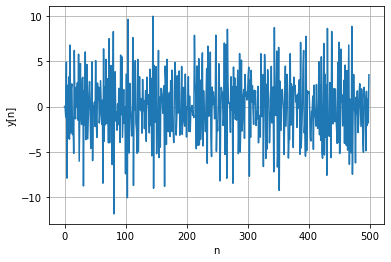
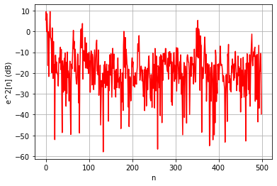
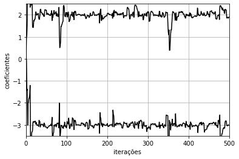
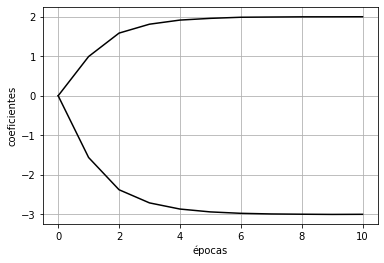
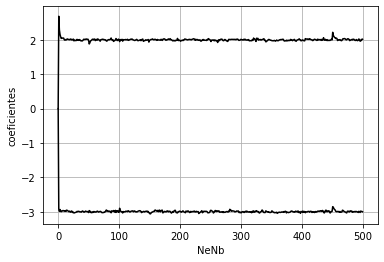

FA minibatch
FA minibatch¶
import torch
import math
import numpy as np
import matplotlib.pyplot as plt
from scipy import signal
from torch import nn
N = 500
M = 2
sigmav2 = 0.01
mu = 0.5
u = np.random.randn(N)
wo = [2, -3]
d = signal.lfilter(wo, 1, u) + np.sqrt(sigmav2) * np.random.randn(N)
def LMS_FILTER(u, d, mu, M):
N = len(u)
uM = np.zeros(M)
y = np.zeros(N)
e = np.zeros(N)
W = np.zeros((N + 1, M))
for i in range(N):
uM = np.concatenate((u[i : i + 1], uM[0 : M - 1]))
y[i] = uM @ W[i, :]
e[i] = d[i] - y[i]
W[i + 1, :] = W[i, :] + mu * e[i] * uM
return y, e, W
(y, e, W) = LMS_FILTER(u, d, mu, M)
plt.figure()
plt.plot(y)
plt.xlabel("n")
plt.ylabel("y[n]")
plt.grid()
edb = 10 * np.log10(e**2)
plt.figure()
plt.plot(edb, "r")
plt.xlabel("n")
plt.ylabel("e^2[n] (dB)")
plt.grid()
plt.figure()
plt.plot(W, "k")
plt.xlabel("iterações")
plt.ylabel("coeficientes")
plt.grid()
plt.axis([0, N, min(wo) - 0.5, max(wo) + 0.5])
(0.0, 500.0, -3.5, 2.5)



def LMS_FILTER_batch(u, mu, M, Ne, wo):
N = len(u)
uM = np.zeros(M)
y = np.zeros(N)
e = np.zeros(N)
W = np.zeros((Ne + 1, M))
G = np.zeros((1,M))
mu=mu/N
for k in range(Ne):
np.random.shuffle(u)
d = signal.lfilter(wo, 1, u) + np.sqrt(sigmav2) * np.random.randn(N)
for i in range(N):
uM = np.concatenate((u[i : i + 1], uM[0 : M - 1]))
y[i] = uM @ W[k, :]
e[i] = d[i] - y[i]
G = G + e[i] * uM
W[k + 1, :] = W[k, :] + mu * G
G = np.zeros((1,M))
uM = np.zeros(M)
return y, e, W
Ne=10
(y, e, Wb) = LMS_FILTER_batch(u, mu, M, Ne, wo)
plt.figure()
plt.plot(Wb, "k")
plt.xlabel("épocas")
plt.ylabel("coeficientes")
plt.grid()

def LMS_FILTER_minibatch(u, mu, M, Ne, Nb, wo):
N = len(u)
uM = np.zeros(M)
y = np.zeros(N)
e = np.zeros(N)
W = np.zeros((Ne*int(N/Nb) + 1, M))
Waux = np.zeros((1,M))
G = np.zeros((1,M))
mu=mu/Nb
m=1;
for k in range(Ne):
n=1;
np.random.shuffle(u)
d = signal.lfilter(wo, 1, u) + np.sqrt(sigmav2) * np.random.randn(N)
for i in range(N):
uM = np.concatenate((u[i : i + 1], uM[0 : M - 1]))
y[i] = uM @ Waux[0,:]
e[i] = d[i] - y[i]
G[0,:] = G[0,:] + e[i] * uM
if (i==(n*Nb-1)):
Waux[0,:] = Waux[0,:] + mu * G[0,:]
W[m,:]=Waux[0,:]
m=m+1
n=n+1
G = np.zeros((1,M))
return y, e, W
Ne = 10
Nb = 10
(y, e, Wm) = LMS_FILTER_minibatch(u, mu, M, Ne, Nb, wo)
plt.figure()
plt.plot(Wm, "k")
plt.xlabel("NeNb")
plt.ylabel("coeficientes")
plt.grid()
